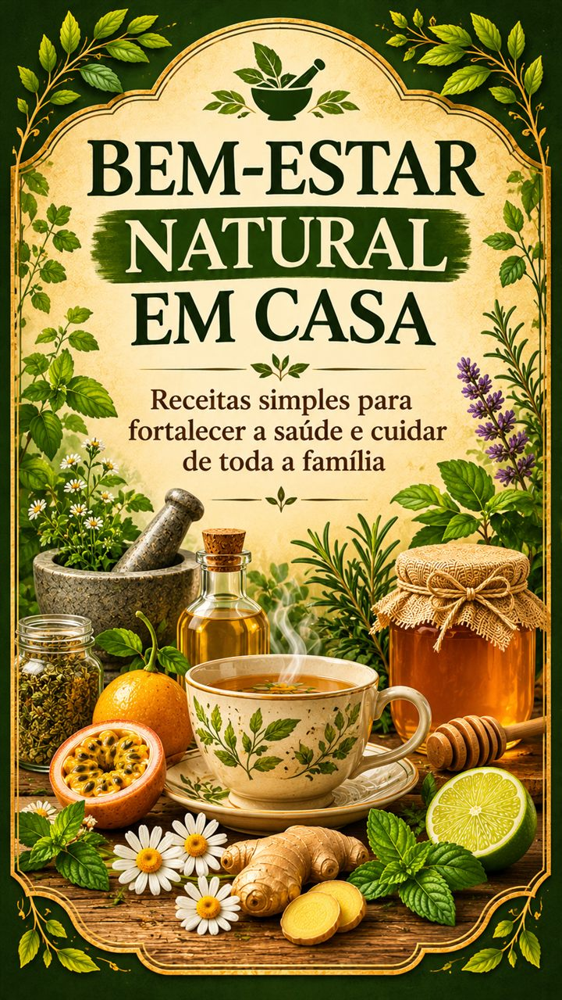
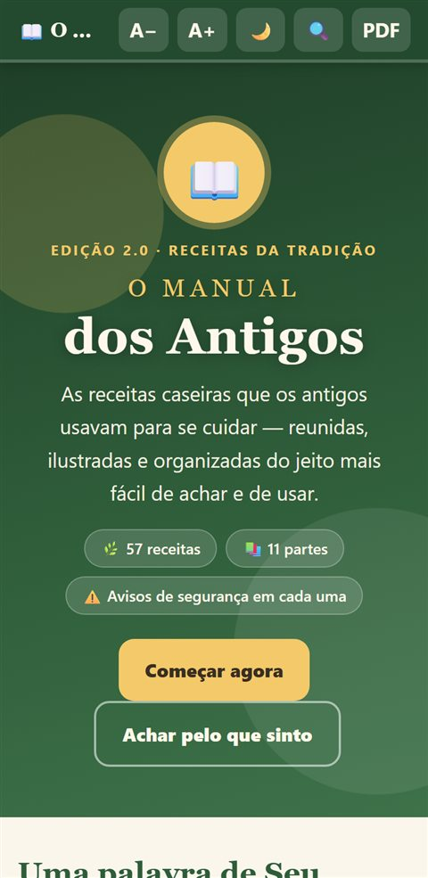
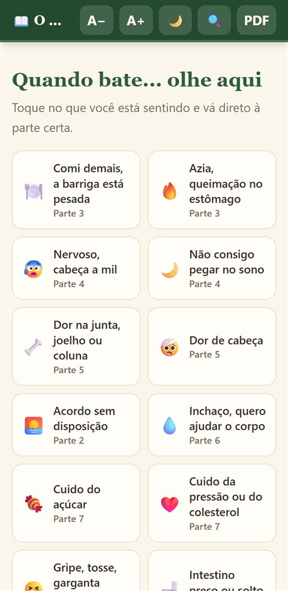
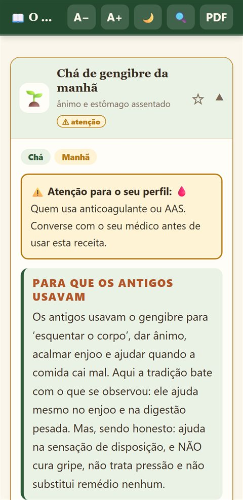
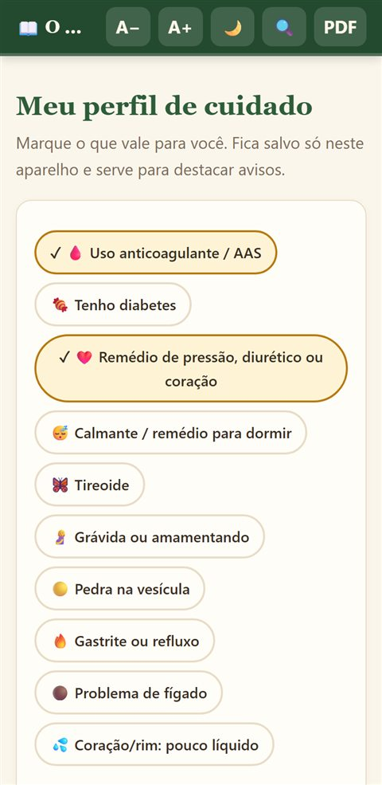
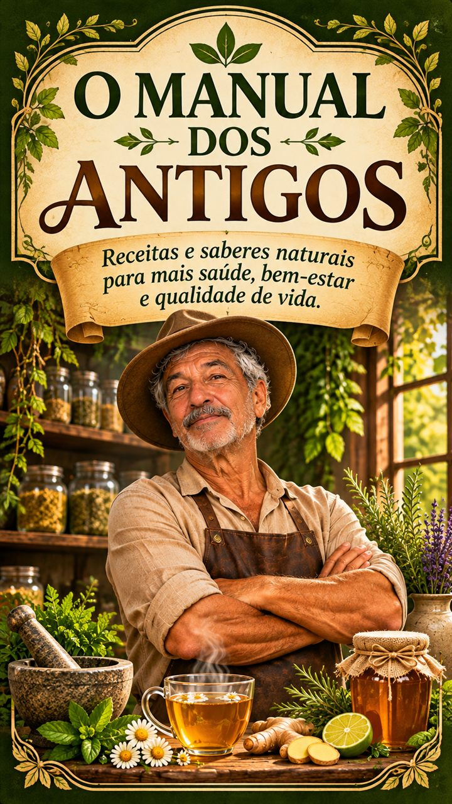
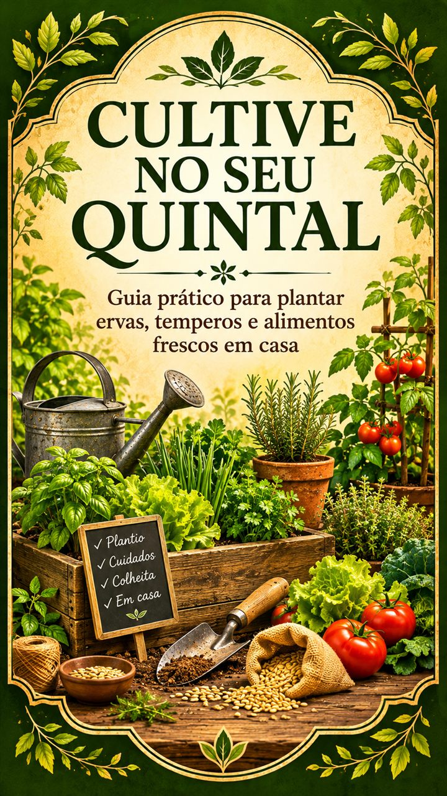
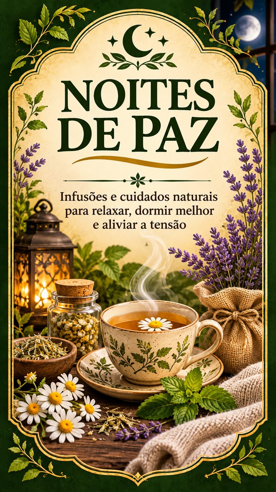

Presente 1
Bem-Estar Natural em Casa
Receitas simples com o que você já tem na cozinha para cuidar de toda a família.
R$ 47,00grátis hoje
Chás, xaropes, compressas e sucos que passaram de geração em geração, reunidos num manual fácil de usar no celular, com os cuidados de cada receita.
Quem cresceu perto dos mais velhos guarda pelo menos uma dessas cenas.
Esse saber está sumindo. Quem sabia de cor muitas vezes não anotou nada. E o que se acha na internet é receita solta: sem medida, sem o modo certo de preparar e sem dizer quem não deve tomar.
Foi para isso que nasceu O Manual dos Antigos: tudo num lugar só, com medida, passo a passo e os cuidados de cada receita, do jeito que a vó explicaria.
Estas são telas reais do manual, do jeito que aparecem no celular. Arraste para o lado.

Abre como um appBotões grandes para aumentar a letra, buscar e imprimir.

"Quando bate…"Toque no que está sentindo e vá direto à parte certa.

Cada receita completaPara que serve, ingredientes, passo a passo e cuidados.

Meu perfil de cuidadoMarque seus remédios e veja o que pede atenção.
Edição 2.0, narrada pelo Seu Antônio, com tudo o que você precisa para preparar em casa.

As 11 partes do manual e quantas receitas cada uma traz
Não é um PDF jogado no celular. O manual foi pensado para ser fácil de verdade.
Digite "tosse" ou "sono" e a receita aparece.
Um toque e a letra fica do tamanho que você precisa.
Marque se usa remédio de pressão, diabetes ou anticoagulante.
Guarde as receitas que mais usa num cantinho só seu.
Leitura confortável à noite, sem cansar a vista.
Gere o PDF e leve o manual para a cozinha.
Eles vêm junto com o manual, sem pagar nada a mais.

Receitas simples com o que você já tem na cozinha para cuidar de toda a família.
R$ 47,00grátis hoje

Guia prático para plantar ervas, temperos e alimentos frescos em casa, mesmo em vaso.
R$ 47,00grátis hoje

Infusões e cuidados tradicionais para relaxar no fim do dia e deitar com tranquilidade.
R$ 47,00grátis hoje
O manual e os 3 presentes, num pagamento só
De R$ 197,00 por apenas
R$37,00
pagamento único, sem mensalidade
Leve o manual, abra e use as receitas. Se em até 7 dias achar que não é para você, peça o reembolso e devolvemos todo o valor, sem burocracia.
"[Depoimento real do cliente 1]" — [Nome], [Cidade/UF]
"[Depoimento real do cliente 2]" — [Nome], [Cidade/UF]
"[Depoimento real do cliente 3]" — [Nome], [Cidade/UF]
Assim que o pagamento é confirmado, o acesso chega no seu e-mail. Você abre no celular, tablet ou computador e pode salvar em PDF para imprimir.
Vai sim. O manual foi feito pensando nisso: botões grandes, letra que aumenta com um toque e uma busca simples. Se preferir papel, é só imprimir.
Não. São coisas de feira, quintal e despensa: mel, limão, gengibre, alho, canela, camomila, hortelã, boldo e outras ervas conhecidas.
Não. O manual reúne costumes e saberes tradicionais e não substitui orientação, diagnóstico ou tratamento de um profissional de saúde. Cada receita traz os cuidados e os sinais de quando procurar o médico.
Converse sempre com seu médico antes. Para ajudar, o manual tem o "Meu perfil de cuidado": você marca se usa remédio para pressão, diabetes, anticoagulante ou calmante, e as receitas que pedem atenção ficam destacadas.
Você leva os 4: O Manual dos Antigos, com as 57 receitas, e os 3 presentes Bem-Estar Natural em Casa, Cultive no Seu Quintal e Noites de Paz.
Sim. Pagamento único e acesso para sempre, sem mensalidade.
Você tem 7 dias de garantia. Pediu, devolvemos o valor integral.
Tenha as 57 receitas organizadas na palma da mão, com os 3 livros de presente, por menos que um lanche.